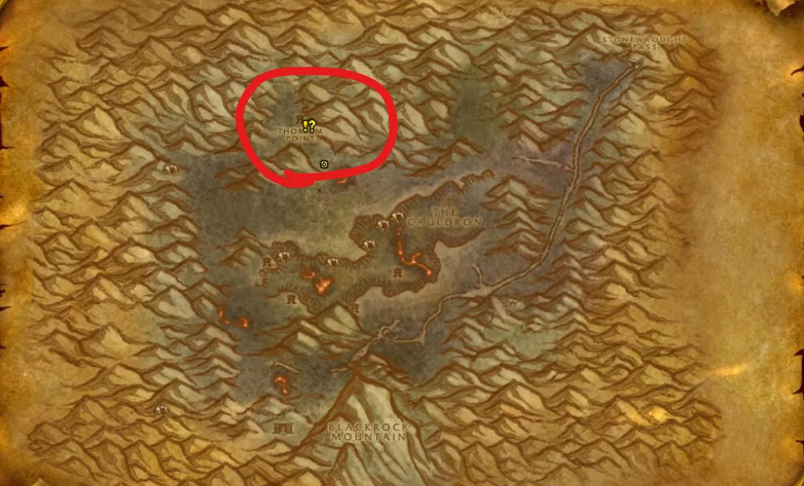

WotLK Warmane Icecrown - Thorium Brotherhood Neutral to Revered
Materials, the repeatable quests and how to reach Lokhtos Darkbargainer.
Thorium Brotherhood Neutral to Revered
AH = Auction House
Required Materials
-
108 Iron Bar (AH)
-
54 Incendosaur Scale (AH)
-
27 Coal (vendor)
-
884 Dark Iron Residue (AH)
Location
Azeroth - Eastern Kingdom - Searing Gorge - Thorium Point
Can be accessed through Blackrock Mountain (South)

Leveling from Neutral to Revered
Start and complete this quest: What the Flux (+825 reputation)
Follow this video to find the required item for the quest.
After completion, you’ll unlock 3 repeatable quests.
According to your current reputation, you’ll repeat a specific
quest.
| From | To | Quest | Repeat how many times? |
|---|---|---|---|
| Neutral | Friendly | Restoring Fiery Flux Supplies via Iron | 27 |
| Friendly | Honored | Gaining Even More Acceptance | 3 |
| Honored | Revered | Gaining Acceptance | 146 |
Reaching Lokhtos Darkbargainer In the Blackrock Depths
Get Shadowforge Key
Follow this video.
Reach Lokhtos Darkbargainer
Lokhtos sells his recipes depending on your faction with the Thorium Brotherhood.